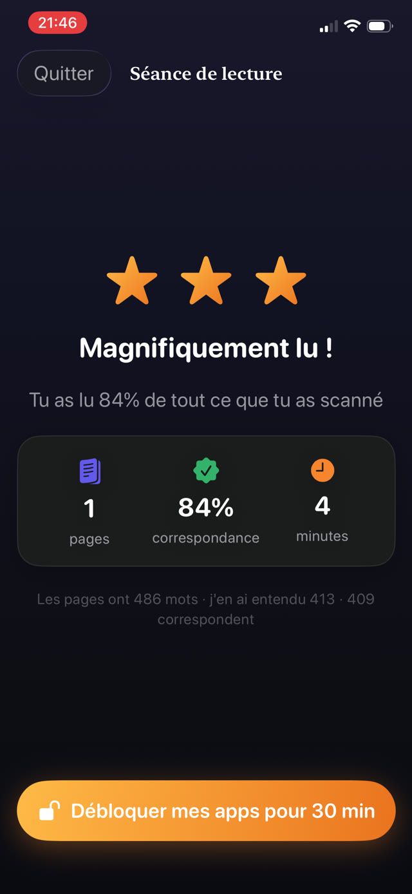

Il y a quatre causes fréquentes. Elles appellent des réponses différentes, et se tromper de diagnostic explique pourquoi tant d'encouragements bien intentionnés ne mènent nulle part.


1. C'est trop difficile
La cause la plus fréquente et la moins dite à voix haute, parce que l'admettre revient à s'avouer bête. Si lire demande tant d'effort que l'histoire n'arrive jamais, bien sûr que c'est ennuyeux : pour cet enfant, il n'y a pas d'histoire, seulement du travail.
Signes : éviter précisément la lecture à voix haute, suivre du doigt bien après l'âge attendu, deviner les mots d'après les premières lettres, fatigue au bout de deux minutes.
Ce qui aide : descendre d'un ou deux niveaux de difficulté, même si cela ressemble à un recul. La fluidité se construit sur des textes que l'enfant maîtrise presque entièrement. Des séances courtes quotidiennes à voix haute la reconstruisent plus vite que de longues séances silencieuses.
2. Il n'a pas voix au chapitre sur ce qu'il lit
Un livre imposé par un adulte, c'est un devoir. Un livre choisi par l'enfant est le sien. La différence de bonne volonté est énorme et ne coûte rien à concéder.
Ce qui aide : élargir ce qui compte. BD, romans graphiques, documentaires sur une obsession très précise, livres de blagues, guides de jeux vidéo. Le décodage est identique, et l'intérêt est le seul carburant disponible.
3. Il n'y a aucun moment où lire est l'évidence
La lecture gagne rarement une compétition ouverte contre un écran à 20 heures. Non pas parce que l'enfant préfère profondément les écrans, mais parce que l'écran n'exige aucune décision.
Ce qui aide : un créneau fixe, toujours à la même heure, assez court pour qu'il n'y ait rien à discuter. Dix minutes avant l'extinction des lumières, ou juste après le dîner. Protéger le créneau compte plus que sa durée.
4. Lire n'a aucun but qu'il puisse ressentir
Les adultes lisent pour le plaisir, mais le plaisir demande de la fluidité pour se déverrouiller. Avant ce point, un enfant a besoin d'une raison qui existe aujourd'hui, pas d'une promesse sur de meilleurs résultats scolaires plus tard.
Ce qui aide : une conséquence visible et immédiate. Dix minutes de lecture débloquent le jeu. Une série qu'il ne faut pas casser. Une médaille à sept jours. Ce n'est pas de la corruption, c'est un pont, et cela cesse de compter dès que la lecture devient gratifiante en soi.
Quand cela peut être plus qu'une réticence
Si un enfant inverse systématiquement des lettres bien après sept ans, ne parvient pas à déchiffrer de façon fiable des mots simples inconnus, a du mal avec les rimes, ou lit correctement un mot sur une ligne et pas sur la suivante, cela vaut la peine d'en parler à son enseignant et de demander un dépistage de la dyslexie.
Réticence et difficulté se ressemblent vues de l'extérieur, et la différence compte. Cet article ne remplace pas ce bilan.
Rendre le but immédiat
Guardian Reader vise directement les causes trois et quatre. Elle crée le créneau fixe, parce que la lecture doit avoir lieu avant que les apps s'ouvrent, et rend le but immédiat, parce que le temps d'écran arrive au moment où la lecture se termine.
Comme l'app ajuste le seuil de réussite à l'âge que vous sélectionnez, un lecteur en difficulté n'est pas mesuré face à un lecteur à l'aise. Et l'objectif quotidien peut descendre à une seule page, ce qui est exactement le bon point de départ pour un lecteur réticent.
La lecture débloque l'écran.
Gratuit · Sans compte, sans suivi
Télécharger Guardian Reader pour iPhone